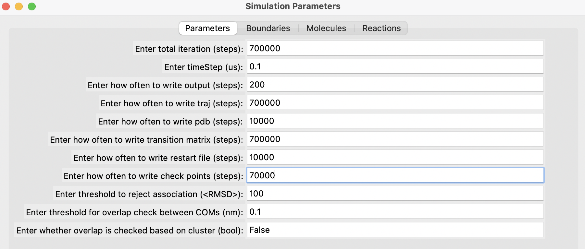
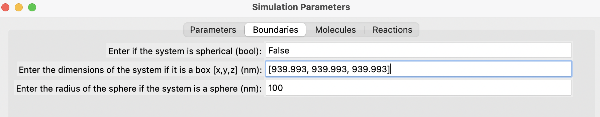
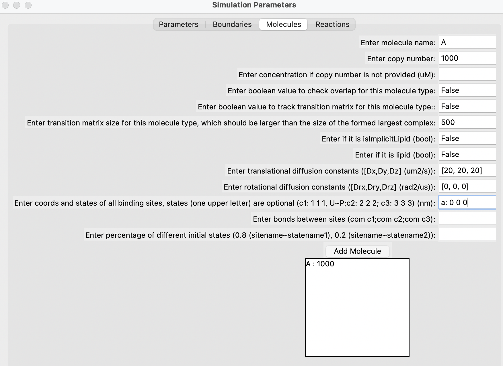
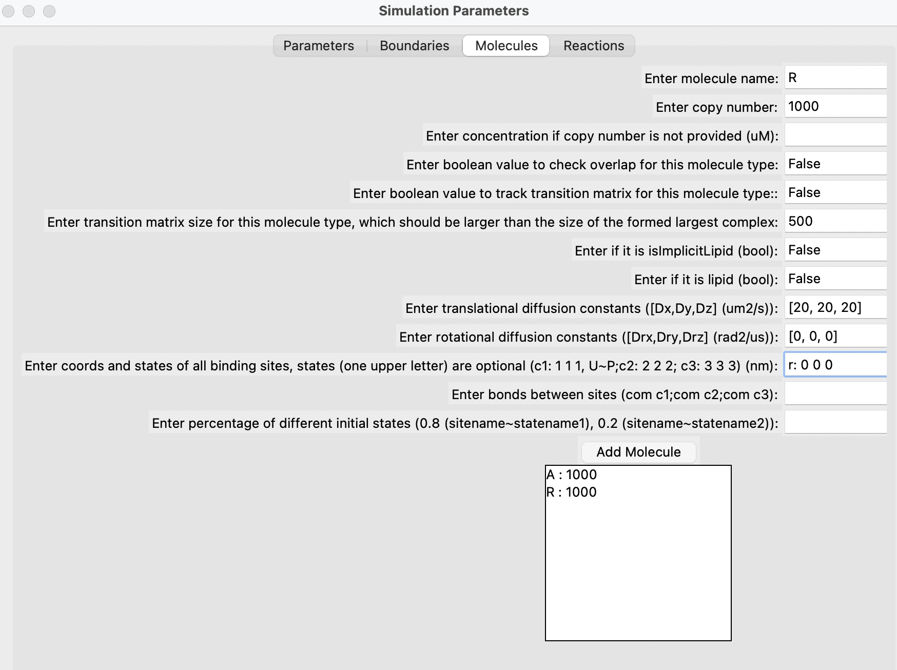
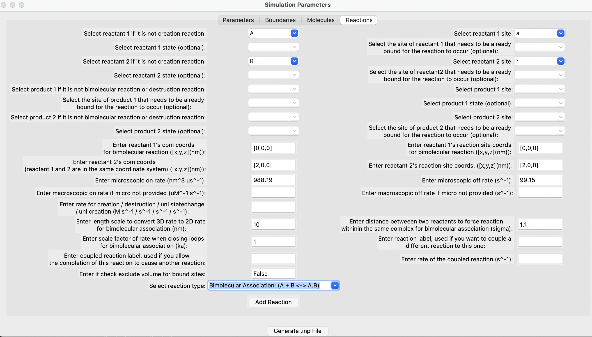

Running a Basic NERDSS Simulation
After installing NERDSS, let's run a basic simulation to understand its philosophy. We will simulate the reversible reaction A(a) + R(r) <-> A(a!1).R(r!1) in a 3D solution. For a comprehensive guide to using NERDSS, please refer to user guide in the NERDSS repository.
1. Prepare the .inp file for the simulation
Following is the content of the .inp file that we will use in the simulaiton. Please refer to user guide in the NERDSS repository for the explanation of each parameter.
Download basic.inp
start parameters
nItr = 700000 # steps
timeStep = 0.1 # us
timeWrite = 200 # steps
pdbWrite = 10000 # steps
checkPoint = 70000 # steps
restartWrite = 10000 # steps
end parameters
start boundaries
WaterBox = [939.993,939.993,939.993] # nm
end boundaries
start molecules
A : 1000
R : 1000
end molecules
start reactions
A(a) + R(r) <-> A(a!1).R(r!1)
onRate3Dka = 988.19 # 3D microscopic binding rate, nm^2/us
offRatekb = 99.15 # microscopic dissociation rate, s^-1
norm1 = [0,0,1]
norm2 = [0,0,1]
sigma = 2.0
assocAngles = [nan,nan,nan,nan,nan]
bindRadSameCom = 1.1
end reactions2. Prepare the .mol files for the molecule types in the simulation
name = A
# translational diffusion constants
D = [20.0,20.0,20.0]
# rotational diffusion constants
Dr = [0.0,0.0,0.0]
# Coordinates
COM 0.0000 0.0000 0.0000
a 0.0000 0.0000 0.0000name = R
# translational diffusion constants
D = [20.0,20.0,20.0]
# rotational diffusion constants
Dr = [0.0,0.0,0.0]
# Coordinates
COM 0.0000 0.0000 0.0000
r 0.0000 0.0000 0.00003. Use the GUI provided in the ioNERDSS library to generate the .inp and .mol files (optional)
You can generate input files using the GUI provided by the ioNERDSS library. After installing ioNERDSS using pip, start a Python interpreter and run the following command to start the GUI:
import ioNERDSS as ion
ion.gui()Fill out the parameters in the different sections, add each molecule one by one, followed by each reaction. Finally, click on the "Generate" button. Below are some snapshots.
    4. Run the simulation
Make sure your .inp and .mol files are in the same folder. Navigate to that folder.
- Run the simulation in the local environment (Generally faster)
If you want to run NERDSS locally, add it to your PATH and start the simulation by running:
./nerdss -f basic.inp > log.txt- Run the simulation using Docker
If you are using Docker, start the simulation by running:
docker run -e RUN_NERDSS=true -e ANALYZE_OUTPUT=true -p 8888:8888 -v $(pwd):/SIMULATION -it "path-to-input-files":latestIn running with Docker, the simulation will then begin. The standard output is written to output.log. Once it is done, a Jupyter environment with ioNERDSS installed will be ready for use.
5. Outputs of the simulation
The file copy_numbers_time.dat stores the time dependence of the copy numbers of all species in the system. Below are the first five lines of this file.
Time (s),A(a),R(r),A(a!1).R(r!1)
0,1000,1000,0
2e-05,990,990,10
4e-05,980,980,20
6e-05,966,966,34The file histogram_complexes_time.dat contains the time dependence of the complex components. The first ten lines of this file are shown below.
Time (s): 0
1000 A: 1.
1000 R: 1.
Time (s): 2e-05
990 A: 1.
10 A: 1. R: 1.
990 R: 1.
Time (s): 4e-05
980 A: 1.
20 A: 1. R: 1.
980 R: 1.The simulation snapshots are stored in the PDB/ folder and are in the PDB format.
Anaylze the output
We will create a plot of monomer A(a) vs Time (s) and compare the simulation result with the ODE theory..
import pandas as pd
import matplotlib.pyplot as plt
# Read the simulation data from the file
sim_df = pd.read_csv('copy_numbers_time.dat', sep=',')
# Read the ODE theory data from the file
# Using regex to handle one or more spaces as the separator
ode_df = pd.read_csv('theoryODE.dat', sep=r'\s+', skipinitialspace=True)
# Plotting
plt.figure(figsize=(6, 4)) # Adjust the figure size (width, height) in inches
plt.plot(sim_df['Time (s)'], sim_df['A(a)'], 'o-', label='Simulation')
plt.plot(ode_df['time(s)'], ode_df['A(t)'], 's-', label='ODE Theory')
plt.xlabel('Time (s)', fontsize=14)
plt.ylabel('A(a)', fontsize=14)
plt.title('Monomer A(a) vs Time (s)', fontsize=16)
plt.legend(fontsize=12)
plt.grid(True, which='both', linestyle='--', linewidth=0.5)
plt.tight_layout()
# Save the figure in PNG format with a resolution of 300 dpi
plt.savefig('comparison_plot.png', dpi=300, bbox_inches='tight')
plt.show()Render movies for the trajectory
You can also generate movies of the simulation using the outputted PDB files and OVITO.